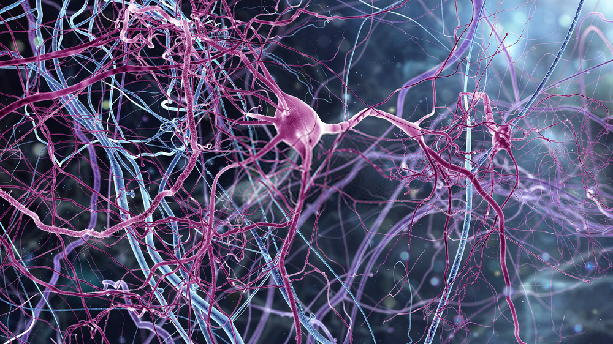
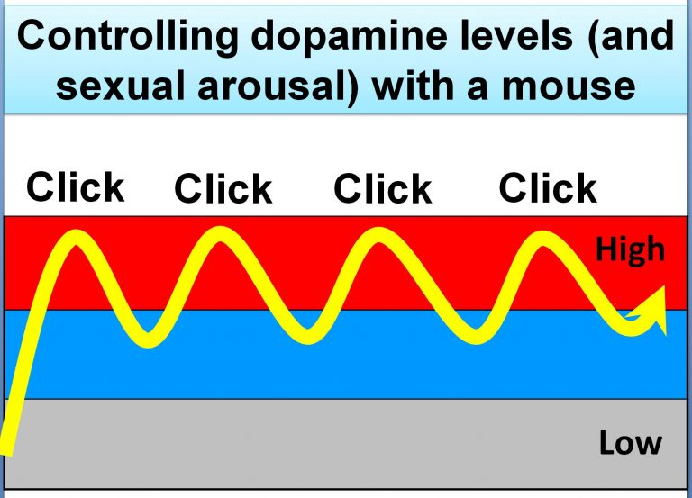
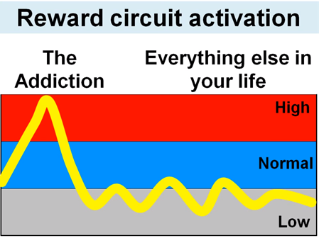
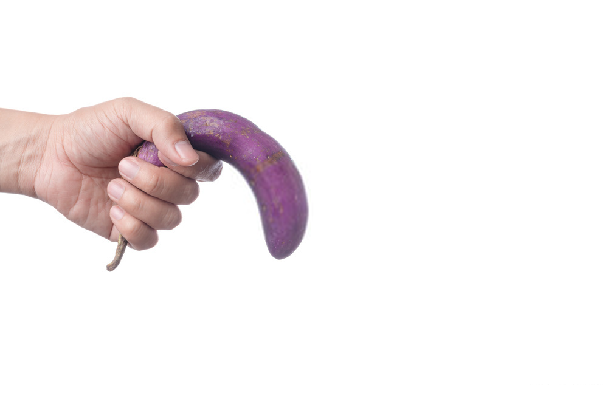
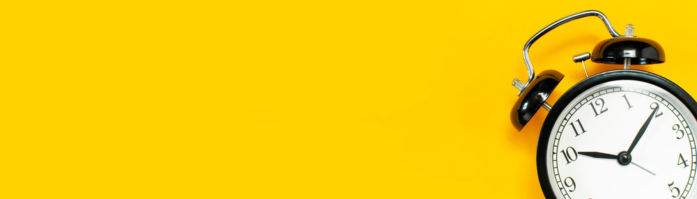

Why does porn grills men’s brain ?
Beyond this catchy title hides a reality unfortunately similar. Before explaining why, let’s do a quick history of this particular cinematographic art.
Before talking about cinema, eroticism and pornography have been the focus of novels since the very beginning of writing. Whether through representations of the sexual act, desire and its many signs, this genre has always attracted interest over the centuries.
But what is an erotic book?
A text that arouses excitement to read?
It is a very subjective definition, a simple poetry can awaken some enthusiasts but leave others of marble.
What is pornography then?
With eroticism, they share the same goal, the representation of personal enjoyment. The researcher, philosopher and writer Michela Marzano believes that eroticism staged a story that tells the desire. Pornography does it too, but much less aesthetically. Pornography for some is eroticism for others.
In the 1960s the first pornographic movies were sold under the mantle, and it was not until 1970 we can see the first film of this kind in the cinema. Deep Throat will be one of the first modern movies to feature a storyline and character development.
Nowadays, pornography is consumed without limit and on demand. With the advent of high-speed internet and smartphones connected in 4G, nobody pays to view pornography, and now the quantity of videos takes over.
Without trying to go into detail in different types of pornography and whether there is good or bad pornography, it is on the scientific aspect that this article will give you the keys to answer yourself the question asked in this title.
Desensitization

What is it?
It all starts because of dopamine. This neurotransmitter allows communication within the nervous system and acts directly on the behavior. It has a major role in “motivation” and “survival processes” because it acts directly on the feeling of pleasure and the reward / reinforcement systems. Basically, dopamine is what rewards you for doing something that your body thinks it’s useful to survive (eating, reproducing, etc.) by giving you pleasure, and giving you the motivation to do it again the next times.
But why am I talking to you about this biochemical molecule?
If there is one action necessary for survival, it is reproduction. I know evolution has not chosen the path of eternal life, or division in the manner of a big blob that would separate in two (like some jellyfish are able to).
For us it is a fertilization by reproduction, a gestation then a birth.
This way human species will survive even after your death.
This is fundamentally in our DNA, and anything that leads to this act obviously gets one of the biggest hormonal rewards the brain can give itself. Scientific studies show that after the hormonal firework that is released in the brain after orgasm, the body takes about two weeks to find normal hormone levels.
The brain has a particular way of functioning, there is on one side the emission of these neurotransmitters, and on the other the receiving. Without doing a course on neurons that’s pretty much how it works. When the neurons are stimulated by a too strong and too long emission of a neurotransmitter, the number of receptors will be gradually reduce to find an equilibrium. It is the phenomenon of habituation, tolerance, and more generally the desensitization.
You’ve probably heard about these words when you talk about addiction to hard drugs (like an alcoholic who can be at 3g and feel almost normal).
Did I said addiction?
Dopamine increases the reward circuit of the brain. But dopamine is not the molecule of pleasure, it is the molecule of waiting, craving, and it will give motivation to achieve the purpose of waiting. Sex is among what produces the most dopamine. This hormone is also produced during surprise, shock, in the light of novelty. If you were shown a horrible spider photo and you do not particularly like these insects, you would surely move back. Now if in 15 seconds I showed you the same picture, you would not have the same reaction.
The problem is that with the internet there can be an unlimited influx of new videos, anticipation, something more extreme, surprising, shocking …
Sexual arousal is one of the things that generates the most dopamine, we see the phenomenon of “Coolidge effect” appear. It causes the decrease of the excitement when one faces the same partner for a long time. Brought back to the scale of X movie viewing, it is this effect that provokes the irresistible urge to click and click again to constantly change videos.
Porn is one of the first activities that allow us to control the secretion of the dopamine hormone with the click of the mouse.

Because of the porn, the circuits of rewards are largely weakened, the kind of watched porn then begins to evolve in order to always bring enough surprise and stimulate these neurons with always more dopamine.
Addictions to drugs and foods have a limit of consumption after which the body can no longer do it, OVERDOSE.
Unfortunately, this does not apply to porn watching, with users who can watch it several times a day for several hours. For years.
But a little personal pleasure from time to time cannot do so much harm? Can it?
Unlike photos, videos completely replace your imagination and place you in the position of a voyeur.
A hyper sensitization on such long years to dopamine create a general decline of this molecule’s receptor in the brain.
With a normal quantity of dopamine receptors, the emotions are stable. When there are fewer, so-called pseudo-emotions can appear and make life bland.

The brain then develops a sensitized highway by reactivating these electrical paths again and again in the brain, and it becomes very easy for the brain to reactivate it. It’s a huge addiction or habit, call it as you want, which is growing.
Because of these two phenomena, many normal things in life may seem boring to us, and the first desire that comes to mind will be to use the sensitized highway that was created with the porn to have a quick and very easy gratification.
Many studies show that the gray matter of the prefrontal lobe becomes literally less dense and the result is a significant decrease in terms of will power and one becomes less able to say to oneself: “wait a little, is it a good idea to do that?” and we succumb without resistance to watching these little videos that we think it will not do us so much harm than that.
Generally, men begin to realize a problem when it begins to impact their real life. Indeed, the stimulation received by real sex is much less than porn, the brain being less stimulated, it does not wake up as much as it should wake the hypothalamus and erection produced is weakened or nonexistent. For many years they put that on the cover of the condom with which we feel nothing, an alcoholic state, or maybe it’s just the girl who did not know how to excite them properly?
One day they may search on the internet from where it can come and will find websites that explain the problem very well like the famous www.yourbrainonporn.com and if they have the motivation to question themselves then they will stop to see if it works.

Erectile dysfunction problems are extremely related to porn addiction. Thousands of men having seen dozens of doctors trying to cure their erection problem, and nothing worked, have resolved everything in 4-5 months of stopping porn. Anyway, if you have a hard time getting an erection with a woman, but no problem watching your favorite porn then the problem is in your head and not physiological.
How to cure itself if like 90% of the men one is addicted to the porn?
Well, the answer is very simple, just stop. The magic of the brain lies in its ability to adapt, to change, to modify its own neuronal connections. If part of the brain is no longer used for a long time, it will naturally remove these old neural patterns and make them dedicated to new learning. This is called neuroplasticity of the brain.
The goal is to reset the neural networks from the association of orgasm with an image, porn or fantasy. The best way to get there fast is what is called in English “no PMO”, no Porn, no Masturbation, and no Orgasms. This is the best way to restore dopamine levels and reset your brain.
In itself, masturbating and ejaculating are not bad, if the frequency is drastically reduced, and with the least possible fantasy not to reactivate these neural networks! Because yes, the power of imagination and visualization is huge, and revive memories of video scenes have the same effect as watching them in real life.
The 3 fatal mistakes made by people who decide to quit:
- Porn is a loophole at any time when you feel unhappy, stressed, mentally weak, bored. Those moments must be identified, accepted and tried to be avoided to limit the risk of relapse.
- Being indulgent with yourself is very important if you fail once and it does not matter. What is more serious is to give in to massive viewing porn because anyway, you “cracked”..
- Forget about porn as much as possible, to avoid thinking about it and to say, “I absolutely do not want to look at it!” Accept that your addiction will fight so it will not go away so easily, and it will take a long time before it becomes easy.
A lot of time? But how long exactly?

It’s impossible to have precise numbers, but experiments show that a brain that has been in contact with porn since adolescence, so usually for almost 10 years before having this awareness will need more time. The brain was in its most important phase of construction and development so it is a habit that will be very anchored. We usually talk about a year before being completely cured. Knowing that continuing to masturbate using your imagination will necessarily lengthen the healing time.
For an adult who has discovered porn around the age of 30-40, healing is faster with typically 3-6 months needed.
How to speed up the healing process?
The kind of activity to practice to improve the success of his weaning porn (and masturbation):
- The meditation will help calm the mind and maintain self-control of one’s self.
- Self-knowledge : Trying to realize in the present moment of what is happening in us, emotionally speaking, and to let go of the desires while being aware that they are there.
- The sport to have new sources of dopamine production
- Join a site that tracks the days you hold good, and the days you fail. This gives you motivation not to break a series that starts to be consistent, and there are also discussion spaces that allow you to interact with people who want to get out of this addiction as well. It’s essential not to feel lonely and stay on track!
With the gradual return to normality of the brain and thought patterns (within a few months of stopping), we quickly discover the benefits of stopping this kind of practice, and we have the motivation to hold on long term. It is very important to continue the efforts because even if we feel the positive effects, we can quickly fall back into addiction. It takes months or even years to be really safe from sensitization. Understand that the neural circuit highway is still there, waiting to be reactivated, and the least reactivation of these networks, as an alcoholic who would just drink a beer, can be disastrous and lead back into addiction.
Stopping will not be easy, but the game is clearly worth the effort. And if at the end of a year, you do not find there are improvements, what prevents you from taking again? Be curious and experiment, this is the only way to get your answer under this article.
Bibliography
https://www.reuniting.info/passion_cycle
Surveys reporting high numbers of problems related to the erection.
A list of youtube video that explains in a simple and what I just explained to you in this article.
https://www.youtube.com/watch?v=wSF82AwSDiU
https://www.youtube.com/watch?v=e2mhQf8RjQs
https://www.youtube.com/watch?v=EQuppzt1yEc
https://www.youtube.com/watch?v=1Ya67aLaaCc
A list found on the site http://porn.abstinence.help that made me laugh!
- 1 day of abstinence: the base (OK)
- 3 days of abstinence: the founding trinity (OK)
- 5 days of abstinence: the 4th is bad luck in China, if you have passed this stage, then you are good!
- 7 days of abstinence: first week! It deserves a little chocolate muffin!
- 10 days of abstinence: you have returned to the very select club of double-digit abstainers, congratulations!
- 15 days of abstinence: two weeks already! Continue like this and you will soon be rid of it!!
- 20 days of abstinence: stage of rest after the symbolic cap of the 15 days, make a small assessment on our interior evolution until then.
- 30 days of abstinence: first month. It’s probably the first month you’ve been here for a long time without having watched a single porn video! Do not forget to reinvest your energy, take back what the porn took you!!
- 50 days of abstinence: half a hundred! You are one of the few percent who managed to get to this stage, bravo, you are now an elite warrior!
- 75 Days of Abstinence: Are You Still Here? But stop him he will turn into a half-god!
- 100 days of abstinence: more than 3 months of abstinence and a symbolic number: 100. Few live up to 100 years, and few are the candidates still standing after 100 days, you become part of the pantheon of pornfree warriors.
- 365 days of abstinence: and that’s it, a whole year without porn. Once there, you may say that time has passed rather quickly, faster than during the first days of your abstinence anyway! In the end, you knew how to put an end to the inner war that tore you apart, and to win the right camp, for you, and for all the people that you will rub shoulders for the rest of your days. From now on, you will not rest, but you are like the old village sage, peaceful and pacifist, but whose spirit is filled with all the battles he has taken part in, and which inspires respect for all the young warriors.
Comments
Comments powered by Disqus